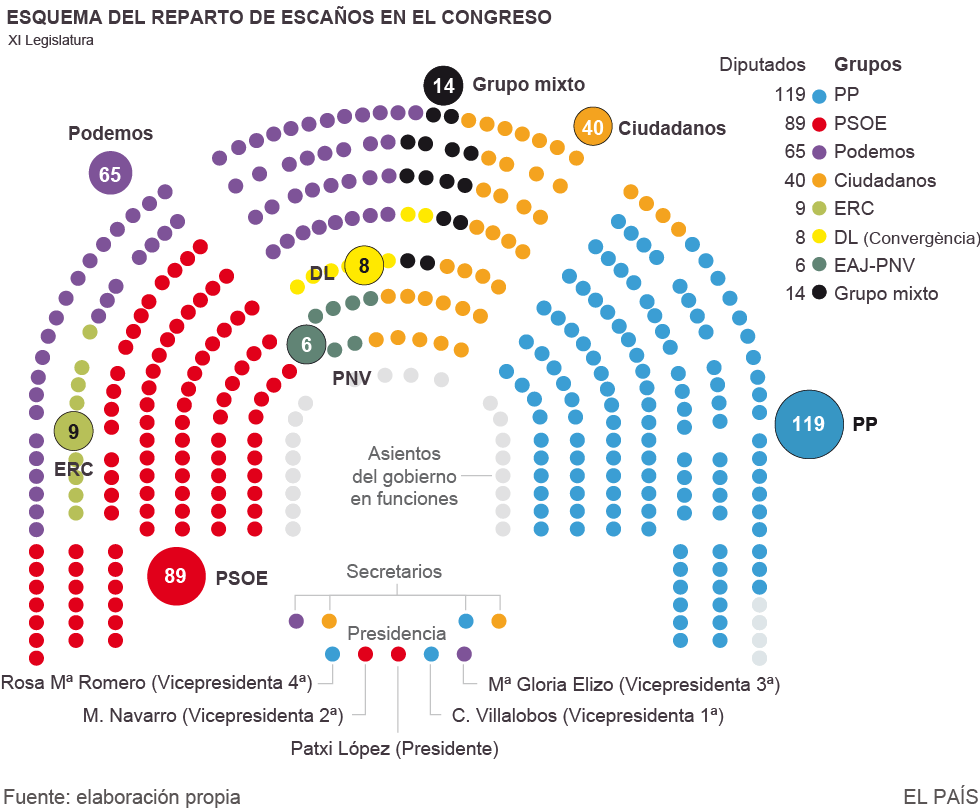

nacional
nacional
La conversación, desarrollada en un clima "cordial" y por espacio de 20 minutos, se ha producido al segundo intento, pues la primera vez que Sánchez telefoneó a Iglesias, éste no había respondido su llamada.
Los líderes del PSOE y Podemos han quedado en seguir hablando "este semana", sin embargo, no se han puesto de acuerdo en cuándo se tendrían que sentar por primera vez para negociar.
Sánchez ha recalcado la "necesidad de respetar los tiempos y esperar al mandato del Rey", del que espera que le pida intentar su investidura después de la ronda de audiencias que tendrá lugar a partir del miércoles.
Sin embargo, Iglesias tiene más urgencia. El líder de Podemos ha destacado la importancia de "no dilatar más el tiempo" y ponerse a "trabajar" cuanto antes "para un Gobierno progresista de cambio plural y proporcional" en el reparto de ministerios.
